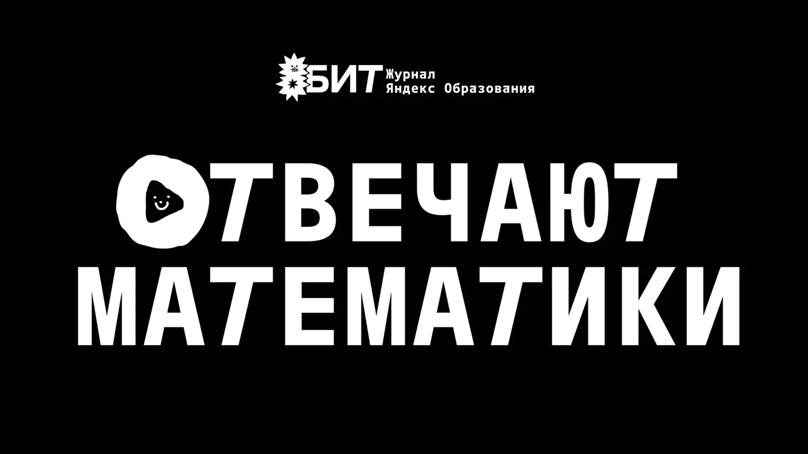
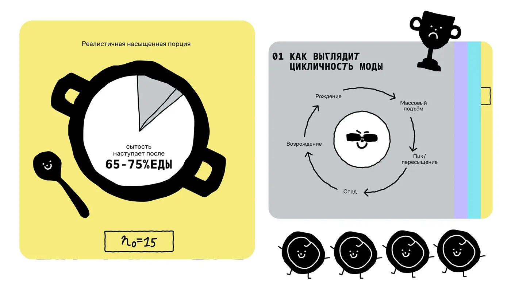
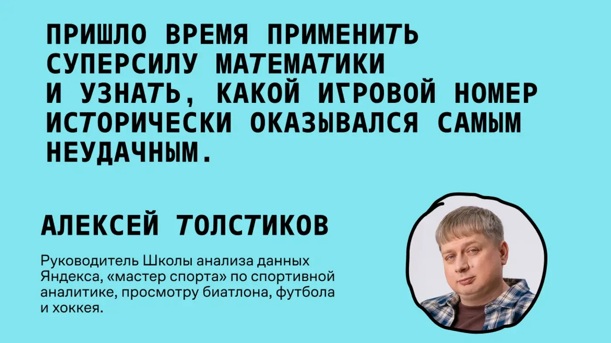

Математика и data science решают реальные задачи
Выпускники ШАДа используют экспертизу для прогнозирования движения вулканических облаков, анализа поведения пешеходов и других сложных процессов.
Yandex Education · Video series
Нетривиальные жизненные вопросы становятся способом показать, как на самом деле думают математики и data scientists.
О проекте
В обычной жизни выпускники ШАДа используют математику и data science для сложных задач — от вулканических облаков до поведения пешеходов.
В проекте они применяют экспертизу к забавным, странным и цепляющим вопросам. Зритель видит не только ответ, но и сам процесс мышления.
CASE BREAKDOWN / VIDEO SERIES
Выпускники ШАДа используют экспертизу для прогнозирования движения вулканических облаков, анализа поведения пешеходов и других сложных процессов.
Проект переводит сложный интеллектуальный процесс в понятный зрителю формат: математик получает нетривиальную жизненную задачу, а камера фиксирует путь к решению.
Герои применяют хардовую экспертизу к странным, бытовым и цепляющим вопросам. Контраст между серьёзностью метода и лёгкостью темы делает выпуск понятным широкой аудитории.
Я отвечала за концепцию спецпроекта, визуальную рамку серии и сопровождение производства четырёх выпусков.



Project video
Project video
Project video
Project video